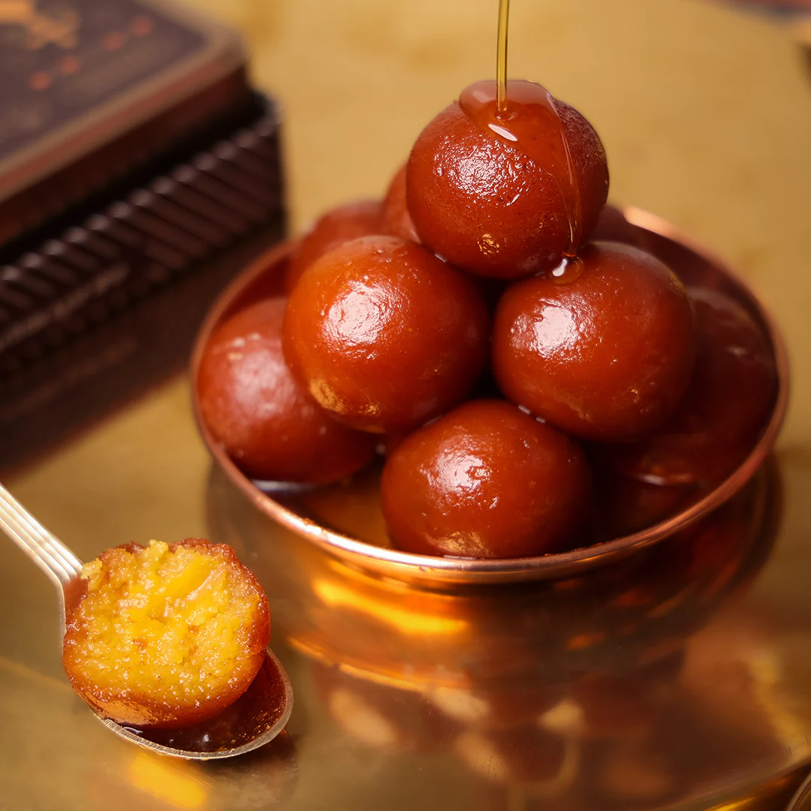
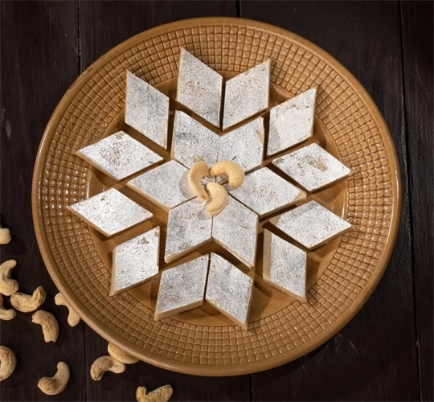

GULAB JAMUN
Ingredients
- Sugar
- Bread
- Oil
Receipe
- Dough: Mix milk powder, flour, ghee, and baking soda. Add milk for a soft dough.
- Shape: Form dough into smooth balls without cracks.
- Fry: Heat oil, fry balls till golden brown
- Syrup: Boil sugar, water, cardamom. Soak fried balls in syrup.
- Serve: Let them soak for 1-2 hours. Garnish with nuts if desired. Enjoy!

KAJU KATLI
Ingredients
- Cashew Nuts
- Ghee
- Sugar
Receipe
- Grind cashews into a fine powder.
- Make sugar syrup (one-string consistency) .
- Mix cashew powder into syrup until a dough forms.
- Add ghee and cardamom (optional).
- Shape, cool, and cut into pieces.
